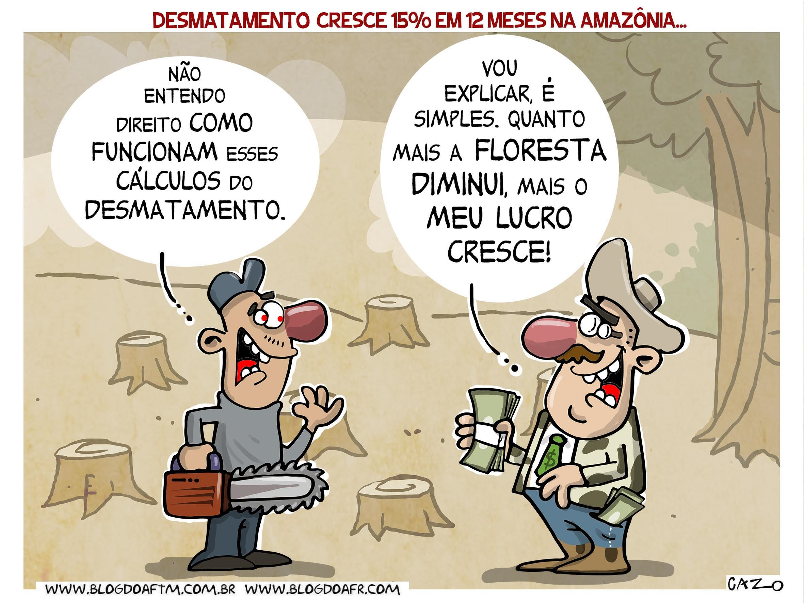

A Amazonia e um lugar muito importante para o brasil
Entre as principais causas do desmatamento da Amazônia, podem-se destacar a impunidade a crimes ambientais, retrocessos em políticas ambientais,
atividade pecuária, projetos de extração de madeira, mineração, estímulo à grilagem de terras públicas e a retomada de grandes obras.
.
O desmatamento da Amazônia não é uma prática atual. O bioma, que ocupa cerca de 49,29% (4.196.943 milhões de km2) do território brasileiro nos estados do Acre, Amapá, Amazonas, Pará, Roraima, Rondônia, Mato Grosso, Maranhão e Tocantins, mantinha-se preservado até a década de 1970, mas passou a sofrer com a retirada da cobertura vegetal a partir desse período.
A amazônia, abriga mais da metade da biodiversidade mundial, representa um terço das florestas tropicais do globo, ajuda a manter o equilíbrio climático com o processo de evaporação e transpiração das árvores
As consequências do desmatamento da amazônia pode também levar extinção de espécies animais e vegetais e também o desequilíbrio no ecossistema
